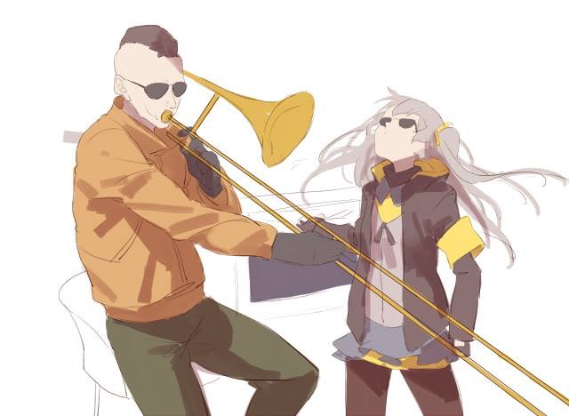
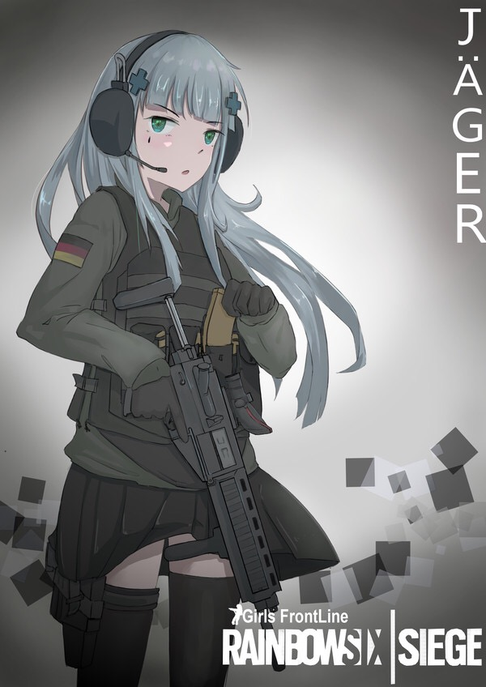
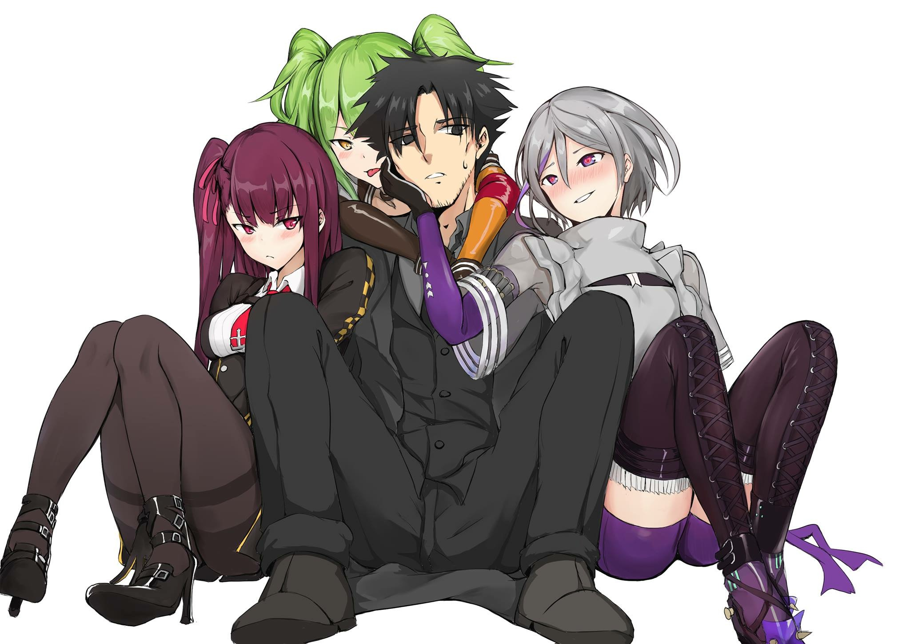

現居於台灣新北市，過著普通大學生的生活
目前就讀於天主教輔仁大學，一年級，主要在學習java程式語言，各式網頁語法和有關醫學資訊的知識。
只不過自己在這些領域裡只是個初學者，也代表著我會犯錯，但我也會積極去學習改正。
我的休閒興趣有：寫小說（中文小說）、聽各式各樣的音樂、在電腦上玩 虹彩六號：圍攻行動和玩手機遊戲。
至於我最喜歡也最擅長的運動是游泳，藉由這個運動，我可以忘掉那些讓我不愉快的事物。
 Github: DD0s-JCN13
 Youtube: DD0s_JCN13 傑
 虹彩六號__戰績(英文網頁)